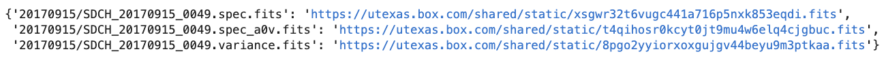
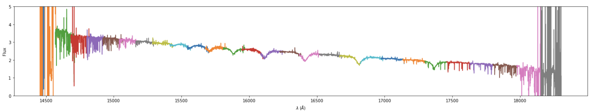
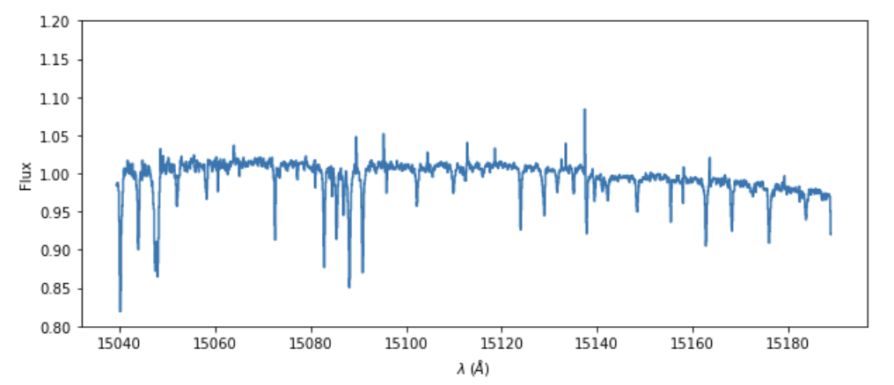

RRISA Access
All of the IGRINS data is stored using Box. RRISA holds all of the download links
you'll need to access any of the IGRINS data products. We support access through of RRISA through
Python and provide tutorials for users to follow. We recommend that users install Anaconda,
a Python distributor and Python package manager. Direcitons for installing Anaconda on various operating
systems can be found here. Finally, we
suggest that users seperate projects that use drastically different packages by utilizing
environments.
A more detailed example of creating a specific environment for a project can be seen in the Quick-Look tutorial
(when installing the developer version of muler).
Jupyter
All of the tutorials are avalible as Jupyter Notebooks. You can install jupyter in a specific environment
(after installing Anaconda) and open a jupyter kernal using the following lines of code in a terminal:
> source activate env-name
> conda install -c conda-forge notebook
> conda install -c conda-forge nb_conda_kernels
> jupyter notebook
RRISA Quickstart
In these code snippets, we will walk through how to import the RRISA files into Python using pandas
DataFrame objects, manipulate DataFrames in various ways to find subsets of data, and how to download
an IGRINS data product using Python. The full tutorial, with outputs, is avalible as a Jupyter Notebook
in the Tutorials folder on our GitHub.
Reading in a RRISA File
pandas provides the .read_csv function which can easily read in any of the RRISA files.
import pandas
#read in the cross matched superlog
xmatch_superlog = pd.read_csv('../RRISA_XMatch/xmatch_log.csv')
Downloading IGRINS Data Products
All of the values in the columns containing the download URLs are strings. We can easily convert
strings back into dictionaries (filename-url pairs) using the ast package. After, we use the requests
package to query the links for each file and download the content.
import requests
import ast
#example dictionary with filename-url pairs
test_dict = ast.literal_eval(xmatch_superlog['URLS_H'].iloc[0])

Here is an example of downloading one file from the above dictionary using the requests package.
#using a session here means that requests can fetch the information faster
#since the connection is reused
session = requests.Session()
#the response holds lots of information gathered from the request (session.get())
response = session.get(test_dict['20170915/SDCH_20170915_0049.spec_a0v.fits'])
#we can check the status code to make sure our link was found successfully
if response.status_code == 200:
#open a file with the corresponding filename to dump the file content into
with open("SDCH_20170915_0049.spec_a0v.fits", 'wb') as f:
#write the file
f.write(response.content)
#close the file--especially important when writing many files at once or
#trying to prevent against corrupted files
f.close()
#print that we downloaded the file
print(f"Downloaded SDCH_20170915_0049.spec_a0v.fits")
A more detailed example for multiple file downloads can be found in the full Quickstart tutorial on our
GitHub.
DataFrame Manipulation
We can find the highest signal to noise spectra for each object using only a few lines of code.
First we sort the DataFrame using the 'SNRH' column from highest to lowest value and then we drop all of
the rows that have a repeat object name. When we keep the first occurance of each object name then we get
the highest SNR H band observation for each object!
#sort H band SNR from highest to lowest
xmatch_superlog.sort_values(by=['SNRH'], ascending = False, inplace = True)
#drop all but the first occurance of each object name
xmatch_superlog.drop_duplicates(subset = ['MAIN_ID'], keep = 'first', inplace = True)
We can also set limits on specific values. In this example we require that the SNR in the H band is
higher than 150.
#make a new DataFrame where the SNR H band spectra is greater than or equal to 150
subset = xmatch_superlog[xmatch_superlog['SNRH'] >= 150.]
We can also search for substrings within the possible identifiers for objects with SIMBAD counterparts.
Here is an example that shows how to search for the substring "Tau" within the SIMBAD identfiers.
#it is important to convert the Series (subset['IDS']) into a string (.astype(str))
#so that way we do not get any errors from NaN values within the IDS column
subset_tau = subset[subset['IDS'].astype('str').str.contains('Tau')]
Finally, we can select specifically targets using:
#only keep TAR OBJTYPEs
targets_tau = subset_tau[subset_tau['OBJTYPE'].astype('str').str.contains('TAR')]
We can also filter by coordinates, but that process is more complicated and will be covered
in a specific tutorial.
Reduce Raw IGRINS Spectra Using The IGRINS PipeLine Package (IGRINS plp)
Installation
The installation and methods of the IGRINS Pipeline Package (PLP) are detailed in the
PLP Github wiki.
The most recent version is V2.2 and it runs using Python 2.7. To manage your Python environments
we recommend installing Anaconda.
Once Anaconda is installed, follow these steps to create a PLP environment:
> conda create -n igr-pipe python=2.7
> source activate igr-pipe
> conda install numpy scipy astropy matplotlib pandas jinja2
> pip install stsci.image==2.2.0.dev0
Download the latest version of the PLP and
place in a convient location (e.g. in your root folder or on your Desktop).
Running the PLP
Open a new terminal window and cd to the PLP folder. While there are numerous options
within the PLP reduction, the RRISA reduced data have been created using the following commands:
1. Activate the conda environment for the PLP
> source activate igr-pipe
2. Define the UT date for the data reduction. The raw data should be located in indata folder of PLP.
> UTDATE=20210105
3. Create a recipe log file which must be edited.
> python igr_pipe.py prepare-recipe-logs $UTDATE --populate-group1
The recipe file is compiled from the '.txt' log produced each night. If mistakes were made while
observing, then they will persist in the recipe file. You need to review the recipe file for the file
numbers and matching 'A B B A' sequences. The PLP requires FLATS (ON/OFF), SKY, TAR, and STD files for
a full reduction of the data. Group1 in each row of the recipe identifies the OBSID - the first file in
the observing sequence. Those numbers must match. Group2 in each row is set to '1' by default, but should
be changed to match the OBSID of the telluric standard. An example recipe file looks like:
OBJNAME, OBJTYPE, GROUP1, GROUP2, EXPTIME, RECIPE, OBSIDS, FRAMETYPES
FLAT, FLAT, 1, 1, 40.000000, FLAT, 1 2 3 4 5 11 12 13 14 15, OFF OFF OFF OFF OFF ON ON ON ON ON
G162-44, TAR, 26, 21, 120.000000, STELLAR_AB, 26 27, A B
HIP 38722, STD, 21, 1, 3.000000, A0V_AB, 21 22 23 24, A B B A
SKY, TAR, 85, 1, 300.000000, SKY, 85, A
4. Perform the reduction sequence for each recipe in the recipe file
for RECIPE in flat register-sky sky-wvlsol a0v-ab a0v-onoff stellar-ab extended-ab
extended-onoff stellar-onoff tell-wvsol
do python igr_pipe.py $RECIPE $UTDATE
rc=$?
if [ $rc != "0" ]; then
exit $rc
fi
done
5. Perform the telluric correction
> python igr_pipe.py divide-a0v $UTDATE --a0v=GROUP2
We have provided recipe files for every night of reduced data. Please see the Reduced RRISA page for
details of the PLP output.
Quick-Look IGRINS Spectra Using muler
muler is an open-source community-developed
Python package for analysis of data from echelle spectrographs. muler makes it easy to look at reduced
IGRINS data!
muler has a very detailed and easy to follow installation page.
It is important to make sure when installing muler through conda or pip that the package version is >= 0.3.3,
other versions have installation dependency issues that will prevent certain functions from working properly.
More importantly, muler must be installed in a Python 3.8 or greater environment. An environment with a specific
Python version can be created using the following in the terminal:
> conda create -n env_name python=3.8
muler has excellent documentation and tutorials which
we highly recommend consulting when using RRISA. Any questions, bugs, or feature requests can be posted
to the muler GitHub.
The following tutorial quickly walks through how to read files downloaded using RRISA into muler for viewing.
There are two ways to read in an IGRINS spectrum: an entire band at once or one order in a band at a time. To read
in all of the orders at once we can use the IGRINSSpectrumList class:
from muler.igrins import IGRINSSpectrumList
#H Band spectra file path (in this directory the .sn file also exists) having a .sn file
#with the corresponding file number in the same directory is a requirement of muler
path_H = '20160227/21_Tau/SDCH_20160227_0041.spec_a0v.fits'
#read in the H band spectrum
spec_list = IGRINSSpectrumList.read(path_H)
#plot the spectrum!
spec_list.remove_nans().trim_edges().normalize().plot(color=None, ylo=0, yhi=5)

To only read in one order at a time we can use the IGRINSSpectrum class:
from muler.igrins import IGRINSSpectrum
#read in a specific H Band order from the spectrum file
order = IGRINSSpectrum(file=path_H, order = 21)
#plot the order!
order.remove_nans().trim_edges().normalize().plot(color=None, ylo=0.8, yhi=1.2)

A more detailed tutorial, including how to stitch H and K band spectra together can be found in the Tutorials
folder on our GitHub (and in the muler docs!).